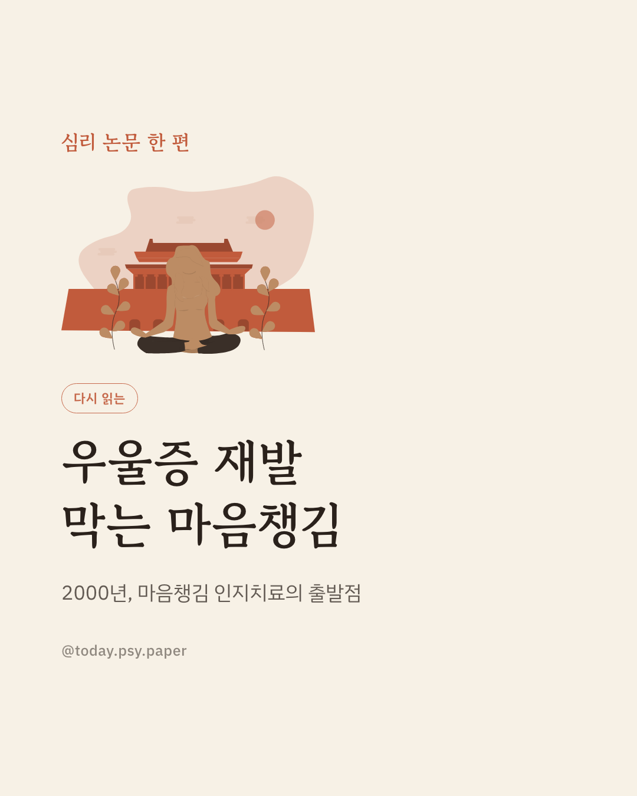
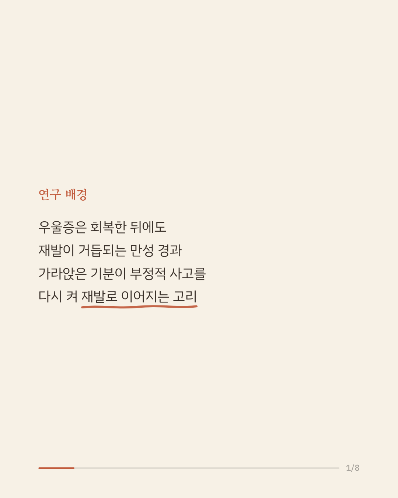
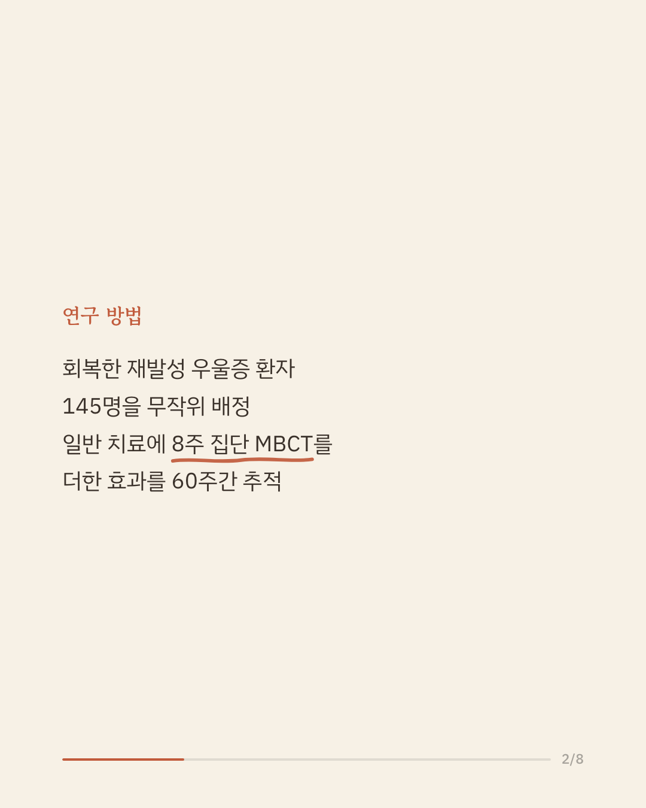
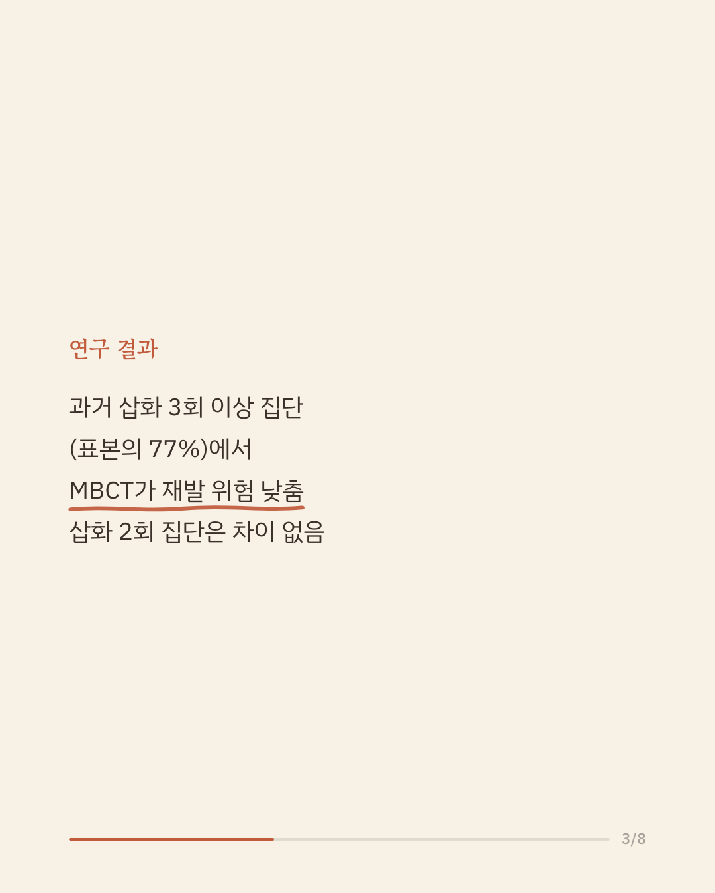
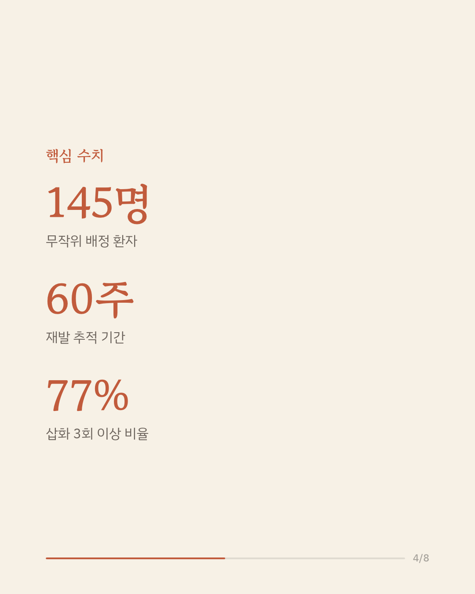
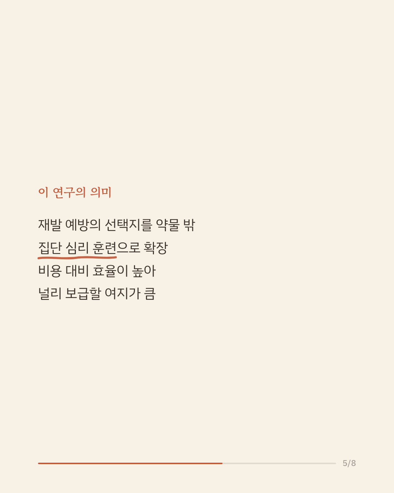
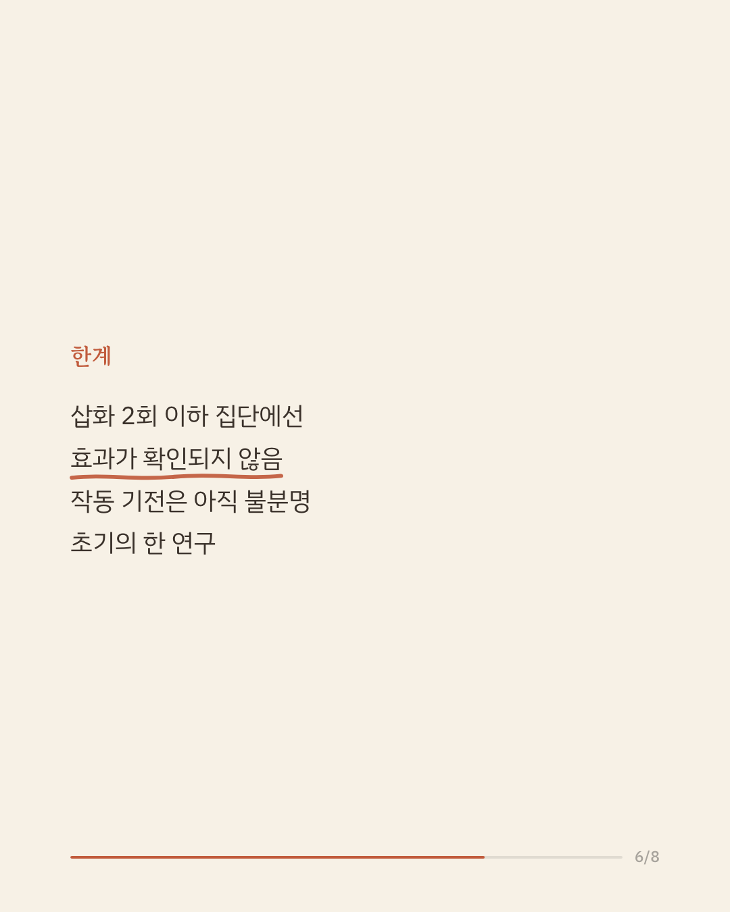
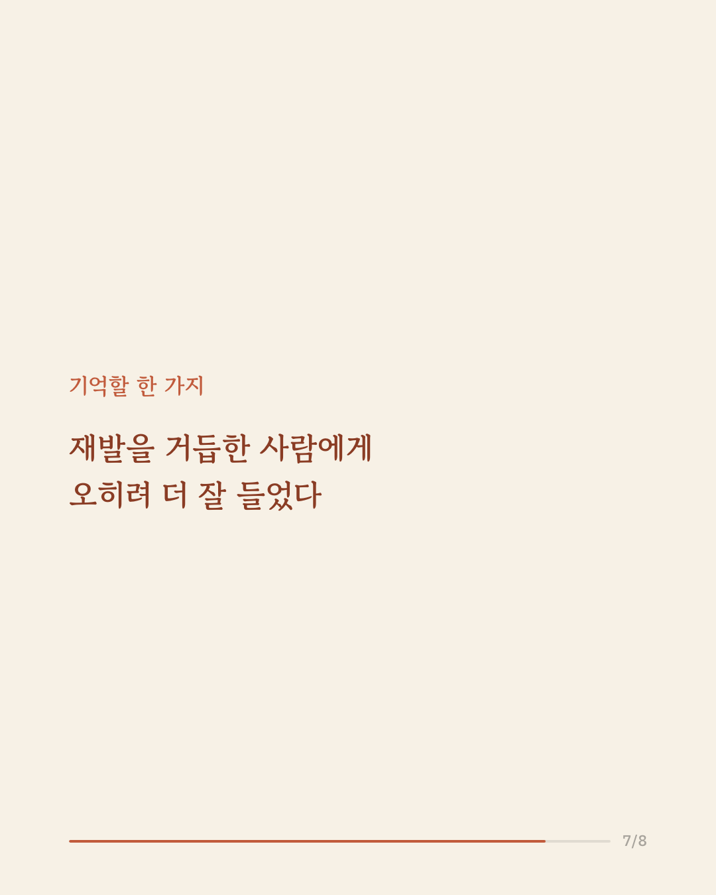
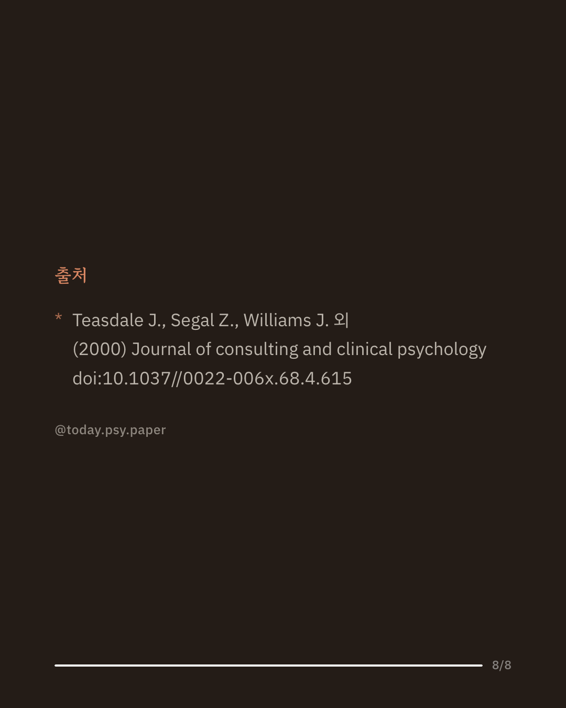

우울증은 회복한 뒤에도 재발이 잦은 병으로, 삽화를 여러 번 겪을수록 다시 나빠질 위험이 커집니다. 특히 가라앉은 기분이 부정적 사고 습관을 다시 불러오는 흐름이 재발의 한 통로로 지목돼 왔습니다. 2000년 이 연구는 회복한 재발성 우울증 환자 145명을 일반 치료만 받는 집단과, 일반 치료에 8주 집단 마음챙김 인지치료(MBCT)를 더한 집단으로 무작위로 나눠 60주간 재발을 추적했습니다. 과거 우울 삽화가 3회 이상이었던 환자들(전체의 77%)에서는 MBCT를 받은 집단의 재발 위험이 뚜렷하게 낮았습니다. 반면 삽화가 2회뿐이었던 환자들에서는 두 집단의 차이가 나타나지 않았습니다. 약물 외에 비용 효율이 높은 집단 심리 훈련으로 재발 예방의 선택지를 넓혔다는 점에서, 이 분야를 지금의 모습으로 만든 논문으로 평가됩니다. 다만 왜 반복 재발군에서만 효과가 나타났는지는 이 연구만으로는 분명하지 않으며, 단일 연구이므로 확대 해석은 조심해야 합니다. 출처: Journal of Consulting and Clinical Psychology (2000), 'Prevention of relapse/recurrence in major depression by mindfulness-based cognitive therapy.' #임상심리 #정신건강정보 #우울증재발 #마음챙김인지치료 #심리학연구
python3 publish.py 10965637